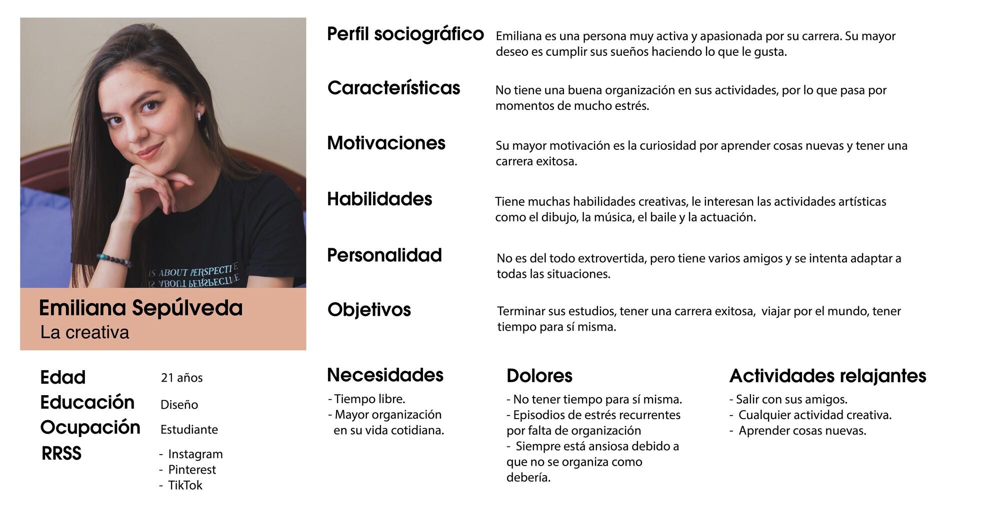
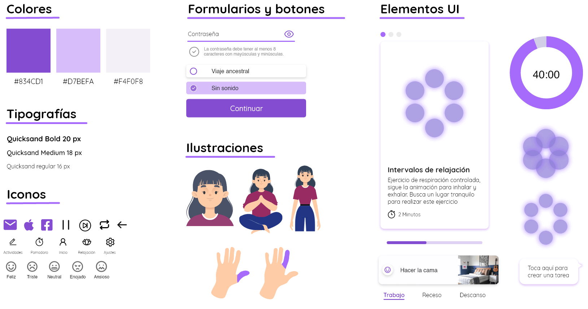

App Movil
Tranqui
Diseño de aplicación movil que ayuda a mejorar la ansiedad, estrés y el ánimo mediante ejercicios de meditación.
Descripción del proyecto
Se desarrolló un diseño de aplicación movil para ayudar a las personas con ejercicios para enfrentar periodos de ansiedad y apoyar al estudiante con recursos de organización.
Tiempo de desarrollo: 3 meses
Equipo: 3 personas (diseñadores)
Rol que desempeñé:
- Investigación de usuario
- Arquitectura de información
- Diseño de app
Investigación
Se realizó una investigación previa al diseño del proyecto, realizando encuestas, entrevistas y analizándolas para definir que solucion sería mas optima para ayudar a personas con ansiedad.
Las conclusiones iniciales de la investigación previa fueron:
- Saben que hay alguna ayuda pero no conocen a profundidad como estas funcionan, por lo que no acuden en busca de ayuda.
- Los que han usado el programa sienten que su experiencia se podría mejorar.
- Creen que se ven afectados producto de la pandemia, en ámbitos académicos y sociales.
- Cuidan su salud mental socializando con amigos, realizando hobbies o evitando situaciones estresantes.
Considerando que ya existen programas de salud mental, analizamos la experiencia del usuario mediante un Journey Map:
Además, analizamos cuales eran los organismos e individuos involucrados en la ayuda de apoyo psicológico:
En base a las entrevistas, llegamos a los siguientes hallazgos:
- Los entrevistados comunmente se muestran con tristeza, ansiedad y síntomas depresivos..
- Los establecimientos tienen un sistema de apoyo al estudiante, pero con poca interacción de los psicólogos.
- Disminuye la interacción entre estudiantes y aumenta el uso de tecnologías.
- La pandemia ha afectado a los estudiantes, producto del aislamiento.
Con toda la información, realizamos un Arquetipos de usuario:
Wireframes

Guia de estilo
En base al moodboard se generó una guía de estilo, considerando tonos suaves pasteles que acompañen la temática de tranquilidad.
Mockups


Tengamos contacto
Si tienes alguna duda de mi trabajo o algun proyecto, puedes contactarme en cualquiera de las redes sociales a continuación.
 kiara.inzunza@gmail.com
kiara.inzunza@gmail.com